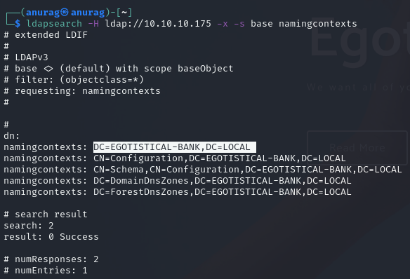

Port 389 - LDAP Enumeration
The nmap script did some basic enumeration and returned the domain EGOTISTICAL-BANK.LOCAL. I’ll dig in a bit more with ldapsearch.
ldapsearch -H ldap://10.10.10.175 -x -s base namingcontexts
-x # simple auth
-H ldap://10.10.10.175 # host to query
-s base # set the scope to base
namingcontexts # return naming contextsThis gives the domain, EGOTISTICAL-BANK.LOCAL:
Now to get more info about the domain:
ldapsearch -H ldap://10.10.10.175 -x -b "dc=EGOTISTICAL-BANK,dc=local"